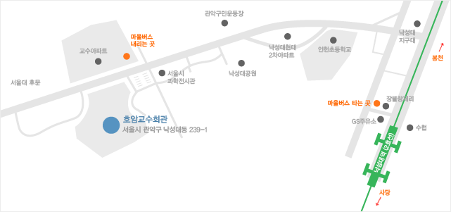

<ion-view view-title="Location">
  <ion-content class="padding">
    
    <div class="card">
      <div class="item item-divider">
        지하철
      </div>
      <div class="item item-text-wrap">
        2호선 낙성대역(4번출구) → GS주유소 → [장블랑제리]제과점 앞에서 마을버스 [관악-02번] 승차 → 호암교수회관 하차(5분거리)<br/>
        * 마을버스[관악-02]는 2~3분 간격으로 운행됩니다.<br/>
        * 마을버스 운행 시간 (낙성대역 출발 기준) - 첫차 06:00 / 막차 00:15
      </div>
      <div class="item item-divider">
      버스
    </div>
      <div class="item item-text-wrap">
        461, 641, 643, 5413, 5424, 5520, 5524, 5528 이용 낙성대하차 → GS주유소 → [장블랑제리]제과점 앞에서 마을버스 02번 승차
        → 호암교수회관 하차(5분거리)
      </div>
      <div class="item item-divider">
        승용차
      </div>
      <div class="item item-text-wrap">
        4남부순환도로에서 낙성대(이정표:서울대후문) 방면으로 좌.우회전 하여 1.5km 직진하여 좌측 위치<br/>
        내비게이션 이용시 입력주소 : 서울시 관악구 낙성대동(구주소 : 봉천동) 239-1
      </div>
    </div>
  </ion-content>
</ion-view>
